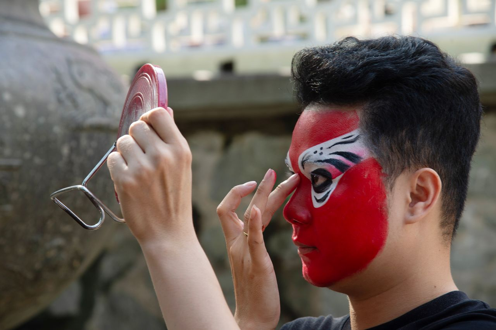
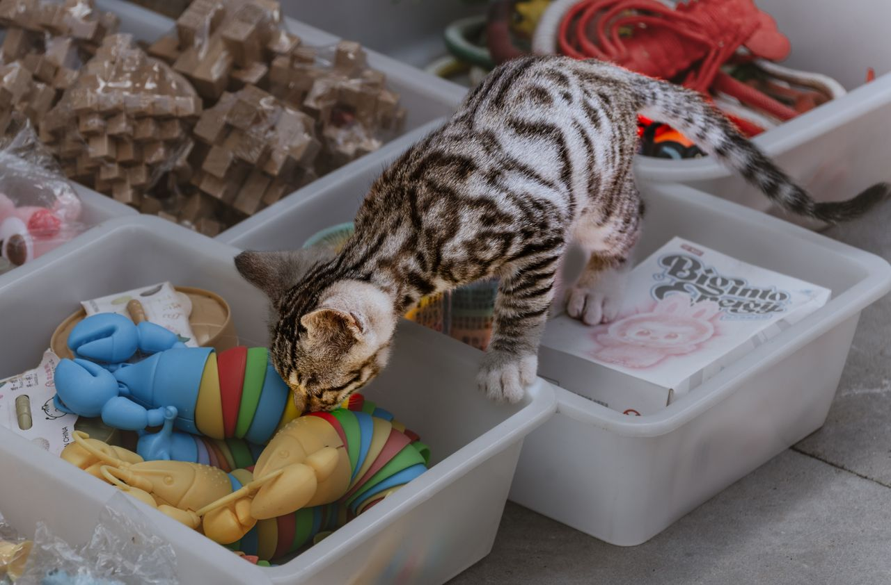
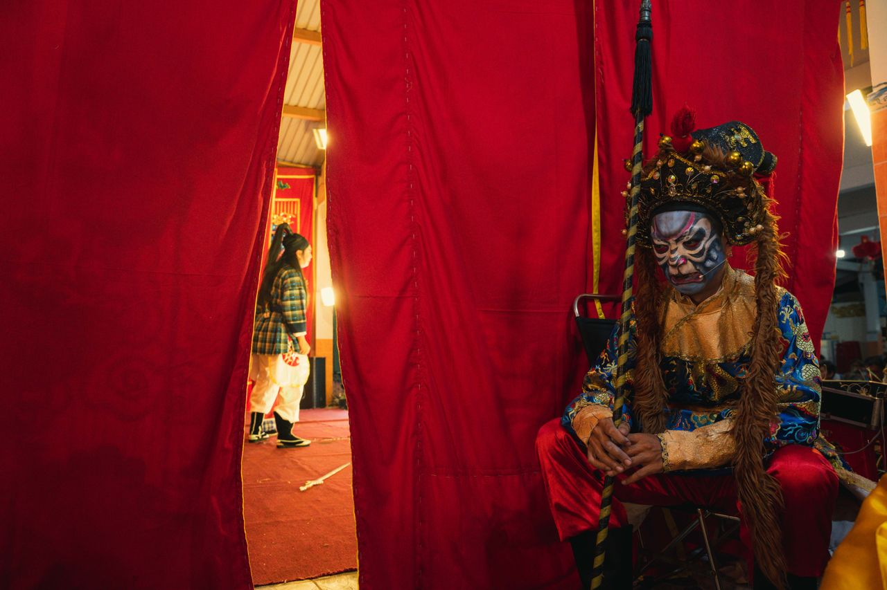

Atelier Design Package
jingju-guochao-merch
Brief: 京剧脸谱国潮文创系列 — 以京剧脸谱色彩象征体系为根基，融合国潮插画风格，面向Z世代年轻消费者的独立文创品牌设计。产品涵盖珐琅徽章、陶瓷杯、金属纪念品、特种纸包装四大品类，五大角色系列（忠义红/刚直黑/智谋白/刚强蓝/神话金银）。
Final Deliverables
Generated Design Set
Curated outputs produced for presentation. Research references are not mixed into this section.


Reference Library
Research Assets
Source images retained for grounding and audit. These are separated from final deliverables.



Package Manifest
Files
| File | Bytes | SHA-256 |
|---|---|---|
| artifacts/00-gallery.html | 15711 | cb2c05b5226f7a13 |
| artifacts/artifact-manifest.json | 3653 | 58e7f27f02035b60 |
| artifacts/design-spec/cultural-palette.png | 1653233 | 6a0ad579bcc44587 |
| artifacts/design-spec/cultural-palette.png.json | 2084 | 065ad5b9918a8901 |
| artifacts/design-spec/iconography.png | 1881557 | 34232a41ea7b969e |
| artifacts/design-spec/iconography.png.json | 2544 | 9d0994b415bbdf9e |
| artifacts/design-spec/manifest.json | 820 | 3debdec477ff7cb1 |
| artifacts/design-spec/material-board.png | 2063300 | 7dc71d2b479c7a5c |
| artifacts/design-spec/material-board.png.json | 2252 | f11c90a56717c6dc |
| artifacts/generated-images/01-product-overview.png | 1828848 | ccf62de1ab27c5fa |
| artifacts/generated-images/01-product-overview.png.json | 1820 | aaf0bacf4270d7ef |
| artifacts/generated-images/02-product-variant-01.png | 1430076 | 773dab3283bccc9d |
| artifacts/generated-images/02-product-variant-01.png.json | 1769 | c9688647dbc8066c |
| artifacts/generated-images/03-product-variant-02.png | 2026210 | efbffd3520f578bf |
| artifacts/generated-images/03-product-variant-02.png.json | 1856 | c80c68fe3e15ea5b |
| artifacts/generated-images/04-cultural-context.png | 1845385 | 1e413c987528e9ab |
| artifacts/generated-images/04-cultural-context.png.json | 1884 | 7a9f653114de9a97 |
| artifacts/generated-images/05-detail-closeup.png | 1657645 | bec3a0b3361eb13f |
| artifacts/generated-images/05-detail-closeup.png.json | 1875 | 664fcf7d3ec6cb8b |
| artifacts/generated-images/06-lifestyle-use.png | 1333937 | 2251a5ec8010453f |
| artifacts/generated-images/06-lifestyle-use.png.json | 1767 | 06e323dd5d4eaa07 |
| artifacts/generated-images/07-packaging-application.png | 1898714 | 734b8b891b92fb33 |
| artifacts/generated-images/07-packaging-application.png.json | 1949 | 8830d564fda5d650 |
| artifacts/generated-images/08-collectible-detail.png | 1771745 | debb3857b8fd7e79 |
| artifacts/generated-images/08-collectible-detail.png.json | 2019 | 05e9e4bad244551d |
| artifacts/generated-images/09-alternative-material.png | 2334662 | d24facb9dc9dc430 |
| artifacts/generated-images/09-alternative-material.png.json | 2067 | 2a504b95871c270e |
| artifacts/generated-images/10-series-overview.png | 1566098 | f8e1d7b2faaae6ab |
| artifacts/generated-images/10-series-overview.png.json | 2363 | b369a6d7fe2f4808 |
| brief.json | 4215 | 97fe15ab9415fd48 |
| bus.jsonl | 6630 | 2cffe3cc5c9daabf |
| plan/acceptance_criteria.md | 6646 | 6753eaf77431d55e |
| plan/deliverable_manifest.json | 8856 | 0a077fcfbe3be5b1 |
| plan/design_direction.md | 8145 | be2375c99ea01f90 |
| plan/design_plan.json | 9789 | 36bced199fe29c12 |
| plan/design_system.json | 12134 | d0c60dd400fa1fd7 |
| plan/task_breakdown.md | 6500 | a7e6ee924d1a2000 |
| research/assets/manifest.json | 9039 | 5158ec13f1503944 |
| research/assets/opera-makeup-application.jpg | 105707 | 812c10296a8333b0 |
| research/assets/opera-makeup-application.jpg.json | 845 | dccd13f3969a7c8e |
| research/assets/opera-mask-artist-craft.jpg | 229010 | ac53e703c4e44891 |
| research/assets/opera-mask-artist-craft.jpg.json | 823 | 2443d4971428491b |
| research/assets/opera-mask-closeup.jpg | 137098 | c3e066076ae80236 |
| research/assets/opera-mask-closeup.jpg.json | 816 | d1b39cc874dbd98c |
| research/assets/opera-mask-on-wall.jpg | 112290 | dfd1a427ec7b3899 |
| research/assets/opera-mask-on-wall.jpg.json | 806 | 2d19a740e3003a46 |
| research/assets/opera-mask-red-gold-03.jpg | 134513 | 8876837f85ad741c |
| research/assets/opera-mask-red-gold-03.jpg.json | 798 | 5950ba7c905b992a |
| research/assets/opera-performer-backstage.jpg | 127381 | a215fa2912f7ad3d |
| research/assets/opera-performer-backstage.jpg.json | 837 | 21d81708ef521382 |
| research/assets/opera-performer-fan.jpg | 266382 | 98b761a840f12a14 |
| research/assets/opera-performer-fan.jpg.json | 760 | fd57589507134552 |
| research/assets/opera-performer-full-costume.jpg | 86230 | a46e7f9bfd60ca14 |
| research/assets/opera-performer-full-costume.jpg.json | 805 | bab6a23ce38f7d37 |
| research/assets/opera-performer-vibrant.jpg | 231025 | 731ae893fb93bd7f |
| research/assets/opera-performer-vibrant.jpg.json | 837 | 5aac316980d54b3c |
| research/assets/opera-performers-group.jpg | 352860 | 1b8dccdf7ffbc23a |
| research/assets/opera-performers-group.jpg.json | 822 | 69c891604fdaeecd |
| research/assets/validation.json | 615 | 6c2edcfb01729829 |
| research/brand_lock.md | 3252 | 6bc1e81ec2f8196b |
| research/evidence.json | 10016 | 6c60ed51764dbbcb |
| research/research.md | 7766 | 54317a0892dae289 |
| research/sources/12d43738-a9ac-4780-8333-22938279bd6a.txt | 511857 | 35539c1f8700c120 |
| research/sources/7ad110fd-2915-4da2-9085-f4e28c462a7f.txt | 20500 | 3fc4e8757728d9c1 |
| research/sources/bd226900-897e-4355-b20c-af545b55860f.txt | 192548 | d3b3e21268d9f650 |
| research/sources/eb54de0d-c18e-430f-b627-7090d248cb72.txt | 136878 | 78dff6072ab7140b |
| review/critique.json | 1845 | df24ecf50db90211 |
| review/critique.md | 9124 | 082c4847b9aa191a |